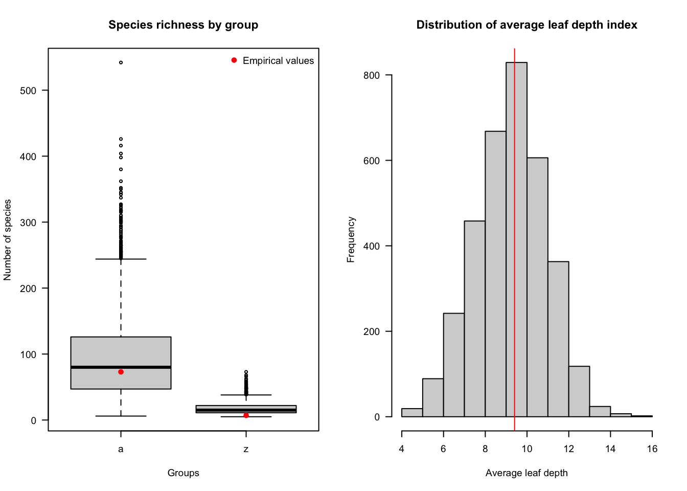

tree <-read.tree(here("data_prepare/data/processed/Colias_full_tree_clean.tre"))groups <-readRDS("~/repos/colias_hostrep/diversification/ignore/groups.rds")eastwest <-select(groups, -north_south)
Estimating shifts of diversification from phylogeny.
-----------------------------------------------------------
--- WHOLE TREE ---
Sampling fraction = 67/80 (83.8 %)
BCST AICc = 206.8103
BCST_DCST AICc = 208.9362
BVAR AICc = 160.7045
BVAR_DCST AICc = 162.8979
BCST_DVAR AICc = 211.1297
BVAR_DVAR AICc = 172.4146
--- SUBCLADES ---
1 / 2
Sampling fraction for south = 7/7 (100 %)
BCST AICc = 19.46666
BCST_DCST AICc = 23.66666
BVAR AICc = 17.92598
BVAR_DCST AICc = 24.92598
BCST_DVAR AICc = 30.66666
BVAR_DVAR AICc = 40.21462
2 / 2
Sampling fraction for north = 60/73 (82.2 %)
BCST AICc = 187.3651
BCST_DCST AICc = 189.5067
BVAR AICc = 129.9482
BVAR_DCST AICc = 132.1662
BCST_DVAR AICc = 191.7247
BVAR_DVAR AICc = 134.6783
--- BACKBONES ---
All the 2 combinations will be compared.
Diversification models are running:
|
| | 0%
|
|=================================== | 50%
|
|======================================================================| 100%
--- Comparison(s) of the 2 combinations ---
A total of 1 combination(s) got the best fit(s) (delta AICc < 2).
Show the code
str(shifts, max.level =1)
List of 4
$ whole_tree:'data.frame': 6 obs. of 8 variables:
$ subclades :List of 2
$ backbones :List of 2
$ total :'data.frame': 3 obs. of 5 variables:
$`75_bck`
Models Parameters logL AICc Lambda Alpha Mu
1 BCST 1 -11.114487 25.02897 0.5556250 NA NA
2 BCST_DCST 2 -10.254317 27.50863 1.1330186 NA 1.1330183
3 BVAR 2 -10.988929 28.97786 0.4351220 0.1746637 NA
4 BVAR_DCST 3 -9.092721 32.18544 1.0342348 0.3884620 2.3700930
5 BCST_DVAR 3 -10.222886 34.44577 1.2194164 NA -1.3230415
6 BVAR_DVAR 4 -9.417034 46.83407 0.6559027 0.2984794 0.2252679
Beta delta_AICc
1 NA 0.000000
2 NA 2.479661
3 NA 3.948884
4 NA 7.156469
5 0.01196721 9.416798
6 0.83646028 21.805094
Show the code
shifts$subclades$'75'
Models Parameters logL AICc Lambda Alpha Mu
4 BVAR 3 -62.86883 132.1662 0.09984647 1.295425 NA
5 BVAR_DCST 4 -62.86883 134.4649 0.10011210 1.295174 1.082390e-08
6 BVAR_DVAR 5 -62.97551 137.0621 0.17287046 1.154949 -6.179551e-01
1 BCST 2 -92.64807 189.5067 0.60812500 NA NA
2 BCST_DCST 3 -92.64807 191.7247 0.60783708 NA 2.776900e-08
3 BCST_DVAR 4 -92.64807 194.0234 0.60786136 NA -1.986505e-08
Beta delta_AICc
4 NA 0.000000
5 NA 2.298703
6 -0.56862687 4.895895
1 NA 57.340425
2 NA 59.558472
3 0.00543362 61.857175
Rates and diversity across time
Show the code
rates <-div.rates(phylo = tree,shift.res = shifts,time.interval =0.5,combi =1, part ="all")rates
$`75`
[,1] [,2] [,3] [,4] [,5] [,6] [,7]
Speciation 5.351291 4.865418 2.545788 1.332062 0.6969898 0.3646939 0.190823
Extinction NA NA NA NA NA NA NA
[,8]
Speciation 0.09984647
Extinction NA
$`75_bck`
[,1] [,2] [,3] [,4] [,5] [,6] [,7]
Speciation 0.555625 0.555625 0.555625 0.555625 0.555625 0.555625 0.555625
Extinction NA NA NA NA NA NA NA
[,8]
Speciation 0.555625
Extinction NA
Plot shifts, diversification rates and paleodiversity over time
Show the code
# Define the layout of plot with the matrix mat mat <-matrix(c(1,1,2,3), nrow =2, ncol =2)layout(mat) par(mar =c(6,4,3,4)) subclade_colors <-brewer.pal(8, "Dark2")[1:4] group_colors <-c(subclade_colors, "black")# Phylogeny with shifts plot.phylo.comb(phylo = tree, data = groups, sampling.fractions = sfrac, shift.res = shifts, combi =1, label.offset =0.1, cex =0.7, lad = F) axisPhylo() mtext("Time (Ma)", side =1, line =2, cex =1, at =17)# Rates through time crown_age <-max(node.depth.edgelength(tree))time <--c(crown_age, seq(floor(crown_age), 0, by =-0.5))plot(time, rates[[1]][1,], type ="l", col = group_colors[1], las =1, xlab ="Time (Myrs)", ylab ="Rates (Events/ Lineages / Myr)", main ="Diversification rates")lines(time, rates[[length(rates)]][1,], type ="l", col ="black") legend("topright", legend =c("Backbone", "After shift"), col =c("black", group_colors[1]), lty =1)# Paleodiversity dynamics plot(time, paleodiversity["75",],las =1, ylim =c(0, 80),col = group_colors[1],main ="Paleodiversity dynamics of Colias",xlab ="Time (Myrs)", ylab ="Number of species", type ="l") lines(time, paleodiversity["backbone",], col ="black")legend("topleft", legend =c("Backbone", "After shift"), col =c("black", group_colors[1]), lty =1)
Model adequacy
To test whether the selected model is adequate, we can simulate data with that model and then compare them to the empirical data. If the model is adequate, it will produce data similar to the observed empirical data.
# Tree imbalancelibrary(treebalance)avgLeafDepI <-avgLeafDepI(tree) avgLeafDepI_posteriors <-sapply(posterior_trees, avgLeafDepI) hist(avgLeafDepI_posteriors, main ="Distribution of average leaf depth index",xlab ="Average leaf depth", las =1) abline(v = avgLeafDepI, col ="red")

Show the code
dev.off()
null device
1
Show the code
# LTT library(phytools)
Loading required package: maps
Attaching package: 'phytools'
The following object is masked from 'package:vegan':
scores
Show the code
ltt_colias <-ltt(tree, plot = F) ltt_colias_df <-data.frame(times =round(ltt_colias$times, 4), ltt = ltt_colias$ltt)posterior_trees_mp <-as.multiPhylo(posterior_trees[[1]]) for(i in2:length(posterior_trees)){ posterior_trees_mp[[i]] <- posterior_trees[[i]] } ltt95_CI <-ltt95(posterior_trees_mp, log = T, las =1) lines(ltt_colias_df$times, ltt_colias_df$ltt, type ="s", col ="red") mtext(text ="Colias", side =3, line =1)ltt95_CI_df <-as.data.frame(ltt95_CI[,c("time", "low(lineages)", "high(lineages)")])ltt95_CI_df$time <-round(ltt95_CI_df$time, 4)points_in_colias <-c() for(i in1:nrow(ltt_colias_df)){ int_max <-sort(ltt95_CI_df$time[ ltt95_CI_df$time >= ltt_colias_df$times[i]][1]) int_min <-sort(ltt95_CI_df$time[ltt95_CI_df$time <= ltt_colias_df$times[i]],decreasing = T)[1] ltt_min <- ltt95_CI_df$`low(lineages)`[ltt95_CI_df$time == int_min] ltt_max <- ltt95_CI_df$`high(lineages)`[ltt95_CI_df$time == int_max] points_in_colias[i] <-ifelse(ltt_min <= ltt_colias_df$ltt[i] & ltt_colias_df$ltt[i] <= ltt_max, T, F)} legend("topleft", legend =c("95% of the distribution of simulated trees around the median", "Median of simulated trees", "Empirical data"), lty =c(3,1,1), lwd =c(1,2,1), col =c("black","black","red"), bty ="n", cex =0.8)